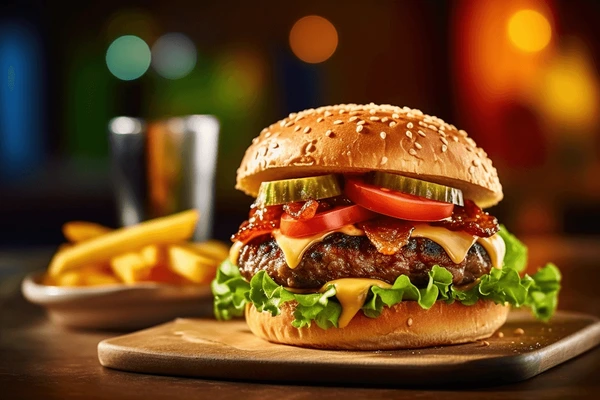

Burger
Home

Need a basic burger recipe that you can whip up in no time? We have the perfect one. With just 5 ingredients and 15 minutes of cooking time, this flavorful recipe is ready to be shared, topped, and sauced in any way you like! Learn how to make your own sizzling beef burger patties right here.
Ingredients
- 1 large egg
- 1/2 teaspoon salt
- 1/2 teaspoon ground black pepper
- 1 pound ground beef
- 1/2 cup fine dry bread crumbs
Steps
- Preheat an outdoor grill for high heat and lightly oil grate.
- Whisk egg, salt, and pepper together in a medium bowl.

- Add ground beef and bread crumbs; mix with your hands or a fork until well blended.

- Form into four 3/4-inch-thick patties.

- Place patties on the preheated grill. Cover and cook 6 to 8 minutes per side, or to desired doneness. An instant-read thermometer inserted into the center should read at least 160 degrees F (70 degrees C).

- Serve hot and enjoy!